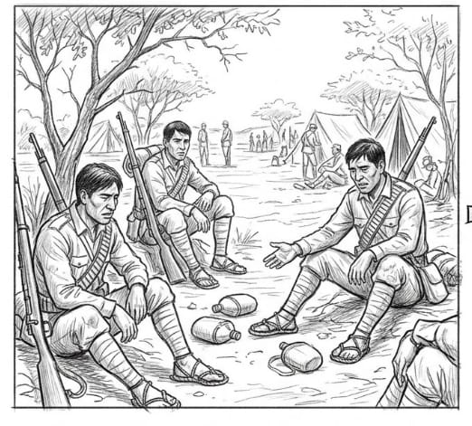
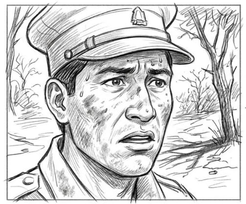
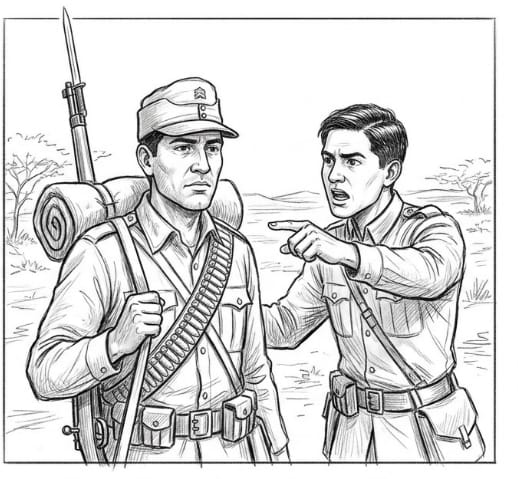
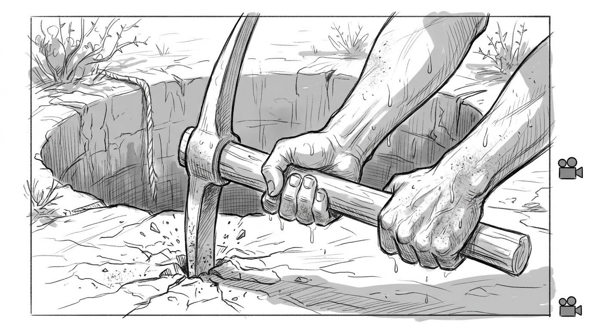
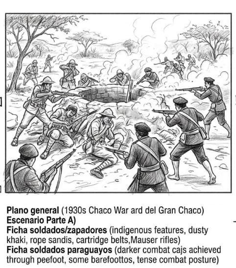
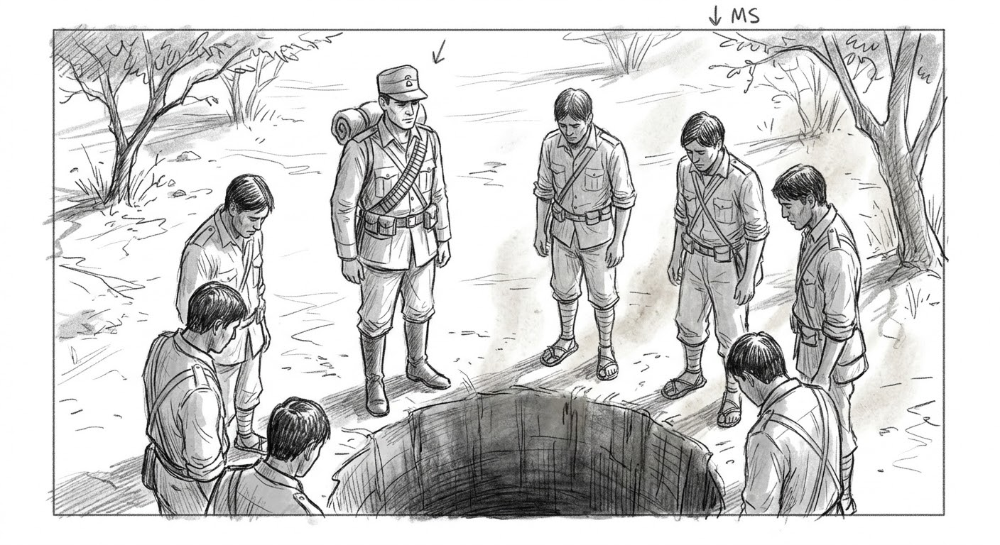
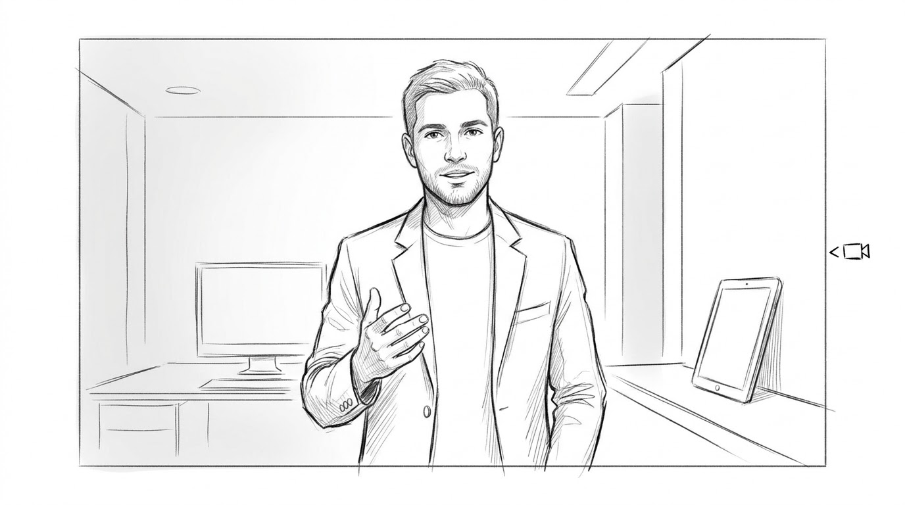
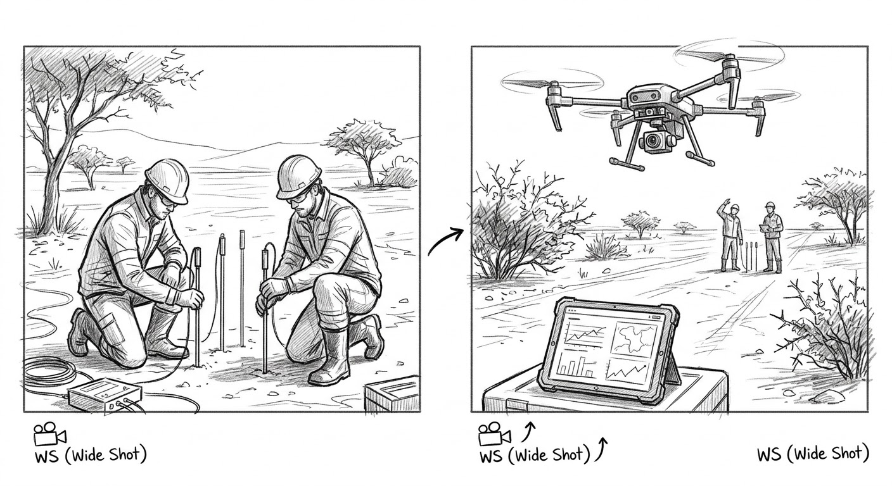
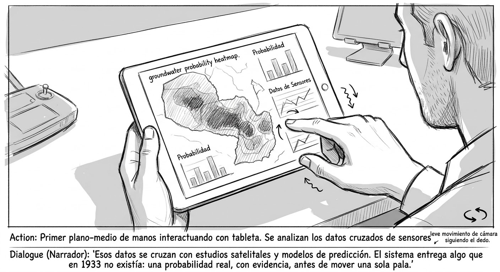
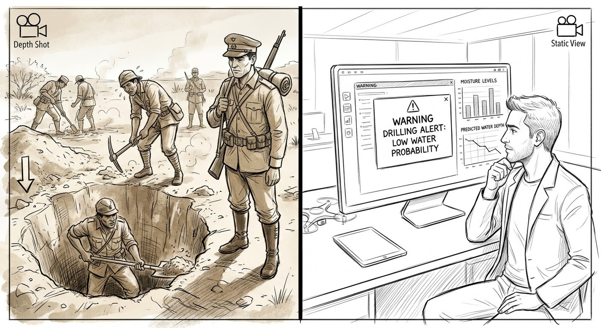

Adaptación audiovisual del relato de Augusto Céspedes
"El Pozo", de Augusto Céspedes (parte de Sangre de Mestizos), está ambientado en la Guerra del Chaco (1932–1935). A través del diario del suboficial Miguel Navajas, narra cómo un grupo de zapadores bolivianos excava desesperadamente un pozo de más de 50 metros buscando agua, hasta que la excavación termina en tragedia: la ironía de una guerra donde el enemigo más letal era la sed.
Se conservó íntegramente el contexto histórico del relato: no se introduce tecnología dentro de 1933. Lo que cambia es el punto de vista narrativo, llevado a una experiencia inmersiva en primera persona (POV) y fragmentado en micro-relatos de máximo 4 segundos, para que cada corte funcione como una entrada de diario leída en el momento en que ocurre, sin perder la esencia cruda y fatalista de Céspedes.
La reinterpretación tecnológica se trabaja como una segunda capa narrativa independiente, tal como exige el desafío: no se altera el relato original, se le añade un análisis posterior desde la Ingeniería de Sistemas. El eje del problema —una decisión de alto riesgo tomada solo por obediencia jerárquica, sin ningún mecanismo de verificación— se traduce hoy a un sistema de apoyo a la decisión (dashboard) compuesto por tres piezas concretas:
El proyecto no busca "salvar" a los personajes del relato: busca mostrar que el mismo tipo de problema —invertir vidas y recursos sin evidencia— hoy tiene una solución de ingeniería posible y verificable.
Mismo esquema Entrada → Proceso → Salida aplicado a los dos escenarios, para comparar directamente qué cambia.
Escasez de agua + orden militar sin estudio previo del terreno
Excavación manual sin verificación; se decide por jerarquía, no por evidencia
Pozo seco de 50 m, más de una decena de bajas, cero agua
Sensores de humedad de suelo + estudios satelitales de la zona
Modelo de predicción cruza los datos y calcula la probabilidad de encontrar agua
Alerta temprana e informada: excavar o no excavar, con evidencia real
El sistema carecía de retroalimentación basada en evidencia: se invertían vidas y tiempo apoyándose solo en la autoridad jerárquica, sin puntos de control que permitieran detener el proceso a tiempo.
Implementar un dashboard de apoyo a la decisión que integre sensores de humedad y datos satelitales para estimar la probabilidad de encontrar agua antes de excavar, generando alertas tempranas.










Cada tarjeta muestra el mismo camino: qué se le pidió a la IA, qué salió mal y cómo se corrigió. Columna izquierda = problema, columna derecha = solución.
La IA dibujó a los soldados bolivianos con bigote grueso. Al comparar con fotos históricas reales de la Guerra del Chaco, ese rasgo no correspondía a la época.
Se agregó esta frase al prompt para forzar el rostro correcto en todas las generaciones siguientes.
El uniforme paraguayo salió casi igual al boliviano: en una escena de combate no se distinguía quién era quién.
Se investigó una referencia histórica real (un afiche de la época) y se corrigió el color: verde oscuro con boina, no caqui.
Los clips salían completamente mudos, sin diálogo, lo que quitaba toda la tensión dramática de la escena.
Se descubrió que Veo 3 sí sincroniza voz y labios si el diálogo va escrito en español, entre comillas, dentro del prompt en inglés.
La parte tecnológica se sentía como un monólogo largo y aburrido; nunca se veía el sistema (sensores, datos) funcionando de verdad.
Se cambió a estilo documental: el ingeniero solo abre y cierra la escena, y en el medio se ve el sistema en acción con voz en off.
Al generar los clips reales, 25 segundos no alcanzaban para mostrar con claridad cómo funciona el sistema propuesto.
Se comprimieron dos pares de escenas del relato original (de 8 a 6 escenas) para liberar tiempo, sin perder ninguna etapa del Camino del Héroe.
La voz elegida (Marcus, tono barítono) sonaba firme y autoritaria, cuando el cierre del relato pedía tristeza y quiebre emocional.
Gemini sugirió etiquetas de audio: [whispering] baja el volumen a un tono íntimo, y [sad] quiebra la voz hacia el lamento.
El motor de voz solo procesa entre 8 y 10 palabras en 4 segundos manteniendo un ritmo natural; el texto original era demasiado largo.
Se recortó el texto a su esencia cruda y se dejó una sola etiqueta rápida para no exceder el tiempo de renderizado.
Este proyecto permitió aplicar una mirada de Ingeniería de Sistemas a una obra literaria: identificar actores, procesos, entradas y salidas dentro de una tragedia ocurrida hace más de 90 años. El problema de fondo del relato —decidir sin evidencia— sigue vigente hoy, y la Ingeniería de Sistemas ofrece herramientas concretas (sensores, datos satelitales, modelos de predicción) para transformar la incertidumbre en decisiones informadas. El proceso con IA fue iterativo: cada error identificado exigió una corrección específica y documentada, reforzando que su uso requiere revisión crítica constante y no aceptación pasiva.